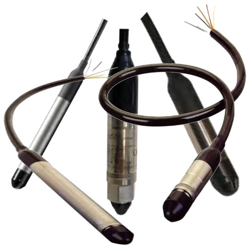
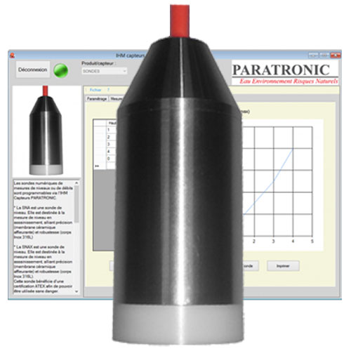
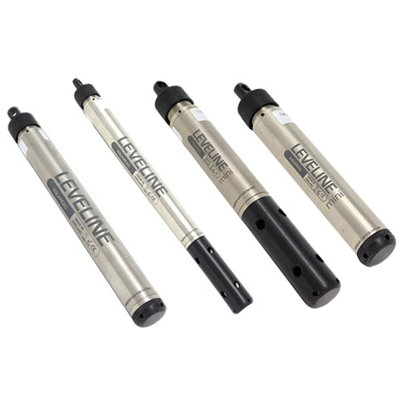
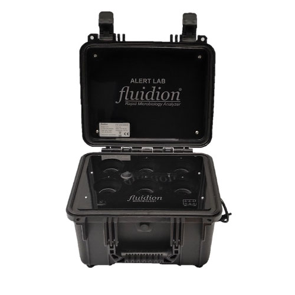
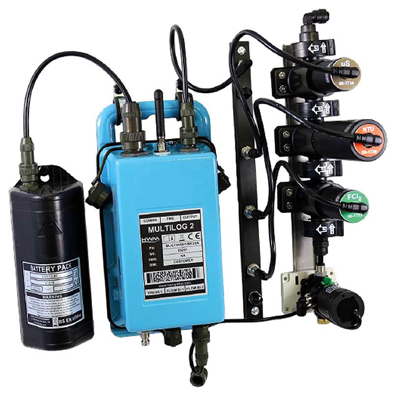
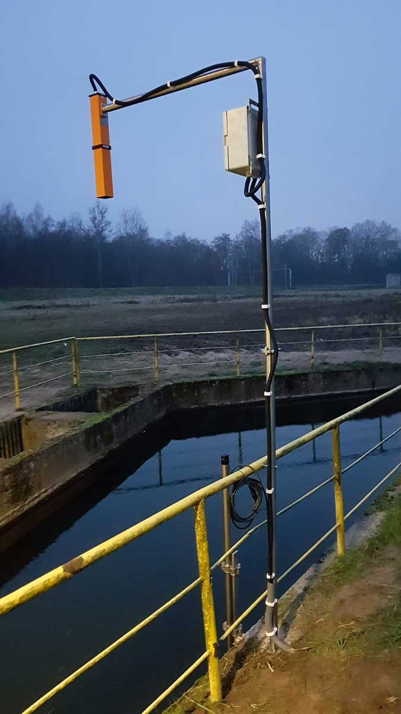
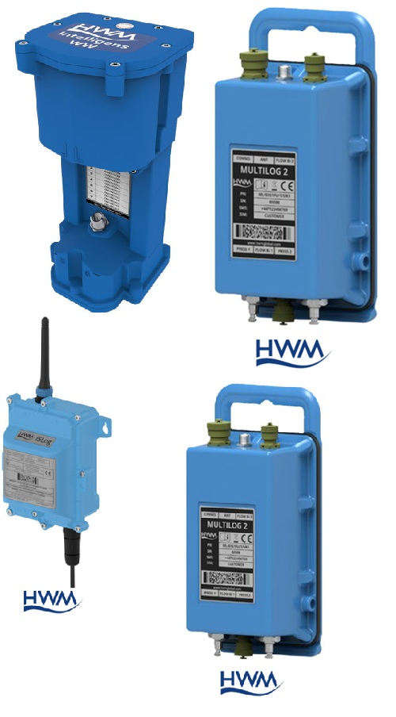
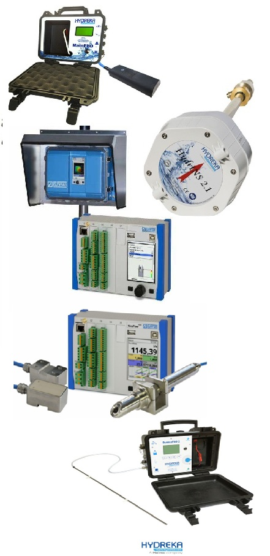

![Vi Na Vi]()
Vi Na Vi
ENGINEERING & TECHNOLOGIES
Ingénierie – Instrumentation – Automatisation – SCADA
Ingénierie – Instrumentation – Automatisation – SCADA
La surveillance de l’eau, qu’il s’agisse des milieux naturels ou des infrastructures hydrauliques, est essentielle pour assurer la sécurité, la gestion durable des ressources et la protection de l’environnement. Vi Na Vi propose une gamme complète de solutions d’instrumentation permettant de suivre en continu le niveau, le débit et la qualité des eaux de surface comme des eaux souterraines.
Water monitoring—whether in natural environments or hydraulic infrastructures—is essential to ensure safety, sustainable resource management, and environmental protection. Vi Na Vi offers a complete range of instrumentation solutions for continuous monitoring of water level, flow, and water quality in both surface water and groundwater.

Capteurs immergés destinés à mesurer le niveau et la pression de l’eau dans les nappes phréatiques, forages, puits et réservoirs. Haute précision, grande profondeur et excellente stabilité à long terme.
Les modèles que nous proposons se distinguent par leur grande précision, ainsi que par la possibilité de disposer de versions avec signaux de sortie en très basse tension adaptés aux contraintes de sites isolés et/ou sans énergie
Submersible sensors designed to measure water level and pressure in groundwater tables, boreholes, wells, and reservoirs. High accuracy, deep-range capability, and excellent long-term stability.
The models we offer stand out for their high accuracy, as well as the availability of low-voltage output versions suitable for isolated sites and/or locations without a power supply.

Capteurs robustes pour mesurer le niveau d’eau dans les canaux, bassins, réseaux d’assainissement et eaux usées. Leur échelle de mesure est ajustable, ce qui les rend polyvalents et faciles à intégrer en télémétrie ou SCADA.
Certains modèles permettent spécifiquement la mesure de débit grâce à la possibilité de le paramétrer en utilisant des tables de conversion hauteur-débit. Le signal de sortie du capteur donne alors directement la mesure du débit.
Robust sensors for measuring water level in channels, basins, wastewater networks, and sewer systems. Their adjustable measurement range makes them versatile and easy to integrate into telemetry or SCADA systems
Some models are specifically capable of measuring flow by configuring them with height–flow conversion tables. The sensor’s output signal then provides a direct flow measurement.

Sondes autonomes permettant l’enregistrement du niveau, de la conductivité, de la salinité et de la température. Idéales pour l’hydrologie, les eaux souterraines et les environnements côtiers
Autonomous probes capable of recording level, conductivity, salinity, and temperature. Ideal for hydrology, groundwater monitoring, and coastal environments.

Les solutions d’analyse et de prélèvement proposées par Vi Na Vi permettent de surveiller la qualité de l’eau et de collecter des échantillons fiables, même dans des environnements difficiles d’accès.
The sampling and analysis solutions offered by Vi Na Vi make it possible to monitor water quality and collect reliable samples, even in hard-to-reach or demanding environments.

Vi Na Vi propose les enregistreurs MultiLog 2 et MultiLog 2 Metrinet pour la surveillance complète des réseaux d’eau potable, d’assainissement, d’hydrologie et des installations isolées.
Vi Na Vi offers the MultiLog 2 and MultiLog 2 Metrinet data loggers for comprehensive monitoring of drinking water networks, wastewater systems, hydrology applications, and remote installations.

Le LDI ROW est un capteur optique autonome et sans contact conçu pour la détection en temps réel d’hydrocarbures à la surface de l’eau. Il utilise la fluorescence naturelle des huiles pour repérer très rapidement les nappes d’hydrocarbures — des carburants légers aux huiles lourdes — dès que celles-ci apparaissent.
Le capteur est disponible en plusieurs variantes afin de s’adapter à différents environnements : version standard, version antidéflagrante pour zones à risque, ou version en acier inox pour milieux corrosifs.
Le LDI ROW est particulièrement adapté chaque fois qu’il est nécessaire de surveiller la présence d’hydrocarbures à la surface de l’eau ou dans des eaux stagnantes / circulantes. Voici quelques cas d’usage typiques :
The LDI ROW is an autonomous, non-contact optical sensor designed for the real-time detection of hydrocarbons on the water surface. It uses the natural fluorescence of oils to rapidly identify hydrocarbon films — from light fuels to heavy oils — as soon as they appear.
The sensor is available in several variants to suit different environments: standard version, explosion-proof version for hazardous areas, or stainless-steel version for corrosive conditions.
The LDI ROW is particularly well suited whenever it is necessary to monitor the presence of hydrocarbons on the water surface or in stagnant / flowing water. Here are some typical use cases:

Enregistreur cellulaire multicanal capable de connecter simultanément plusieurs capteurs (analogiques, numériques, comptages, série). Il fournit une acquisition haute résolution et une transmission automatisée des données, même dans des environnements difficiles.
Version du MultiLog dédiée à la qualité de l’eau, intégrant des capteurs M-Nodes permettant de mesurer des paramètres physico-chimiques en continu (pH, turbidité, chlore, conductivité, oxygène dissous, etc.), même sans alimentation électrique.
Enregistreur simple, économique et autonome, destiné à la télérélève de compteurs, pluviomètres, débitmètres ou tout instrument fournissant des impulsions ou signaux ON/OFF.
Intelligens WW est un enregistreur autonome et robuste conçu pour la surveillance des réseaux d’eaux usées, eaux pluviales et environnements difficiles. Compatible avec une large gamme de capteurs (niveau, débit, états digitaux), il transmet les données en temps réel via réseau cellulaire. Son boîtier IP68 et sa batterie longue durée en font une solution idéale pour les sites isolés, les regards et les zones à risques. Intelligens WW offre une télémétrie fiable, une installation simple et une fiabilité éprouvée pour le monitoring continu.
A multichannel cellular data logger capable of connecting several sensors simultaneously (analog, digital, pulse, serial). It provides high-resolution data acquisition and automated data transmission, even in challenging environments.
A version of the MultiLog dedicated to water quality, integrating M-Node sensors to continuously measure physico-chemical parameters (pH, turbidity, chlorine, conductivity, dissolved oxygen, etc.), even without an external power supply.
A simple, cost-effective, and autonomous logger designed for remote monitoring of meters, rain gauges, flow meters, or any instrument providing pulse or ON/OFF signals.
Intelligens WW is a robust, autonomous logger designed for monitoring wastewater networks, stormwater systems, and harsh environments. Compatible with a wide range of sensors (level, flow, digital states), it transmits data in real time through cellular networks. Its IP68 housing and long-life battery make it ideal for remote sites, manholes, and high-risk areas. Intelligens WW provides reliable telemetry, simple installation, and proven performance for continuous monitoring.
